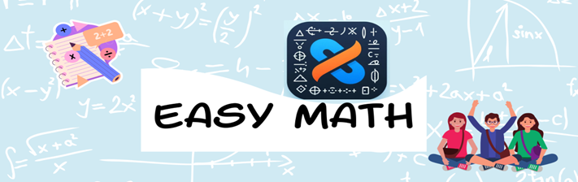

¡Bienvenidos al curso virtual Easy Math!

Estamos muy emocionados de tenerlos aquí y queremos felicitarlos por su interés en mejorar sus habilidades matemáticas. En este curso, exploraremos las funciones cuadráticas de una manera divertida y dinámica, diseñada especialmente para ustedes.
Metodología:
Lecciones interactivas: vídeos, animaciones y actividades interactivas para explorar conceptos.
Ejercicios prácticos: ejercicios de práctica para reforzar lo aprendido.
Juegos matemáticos: juegos en línea y actividades lúdicas para hacer que el aprendizaje sea divertido.
Recursos adicionales:
Biblioteca de recursos: enlaces a sitios web, libros y herramientas en línea para profundizar en los temas.
Foros de discusión: espacio para hacer preguntas, compartir ideas y colaborar con compañeros.
Tutoriales en video: videos de apoyo para resolver problemas específicos y entender conceptos complicados.
¿Qué esperamos de ti?
Participación activa en las actividades y discusiones del curso.
Compromiso con el aprendizaje y la mejora personal.
Respeto hacia los compañeros y el docente.
Preguntar siempre que tengan dudas y no temer cometer errores. El aprendizaje es un proceso.
¡Adelante y bienvenido al emocionante viaje de aprendizaje en matemáticas!